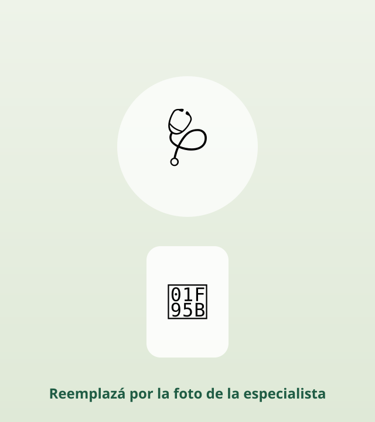

LAS MUJERES DE MÁS DE 40 ESTÁN CAMBIANDO EL OZEMPIC POR ESTA MEZCLA DE $1
Mira los resultados desde los primeros días.
🩺 Médica · ESPECIALISTA
QUIERO DESCUBRIR MI VERSIÓN

la mezcla de $1
✓ 100% gratis
✓ Resultado al instante
✓ 100% natural